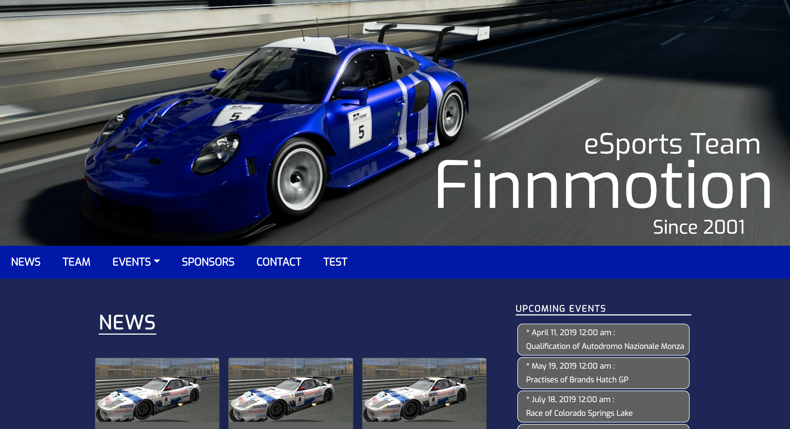
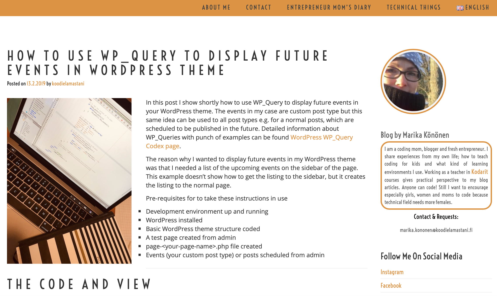
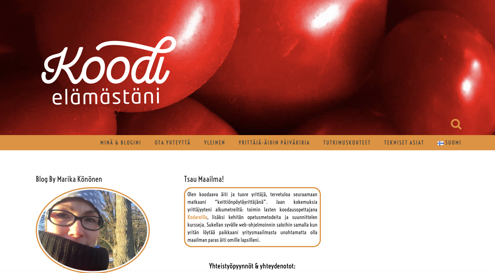
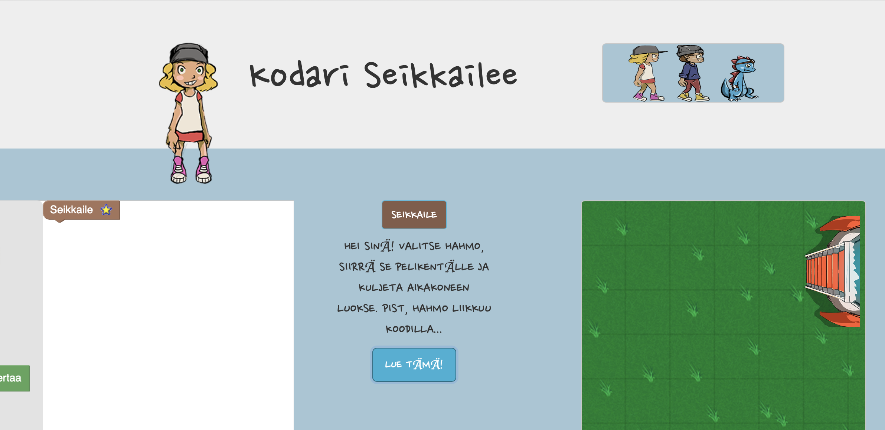
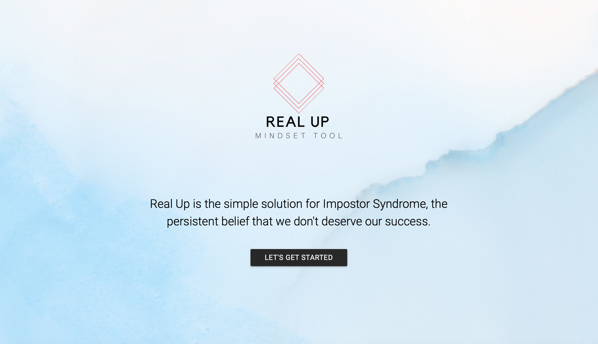
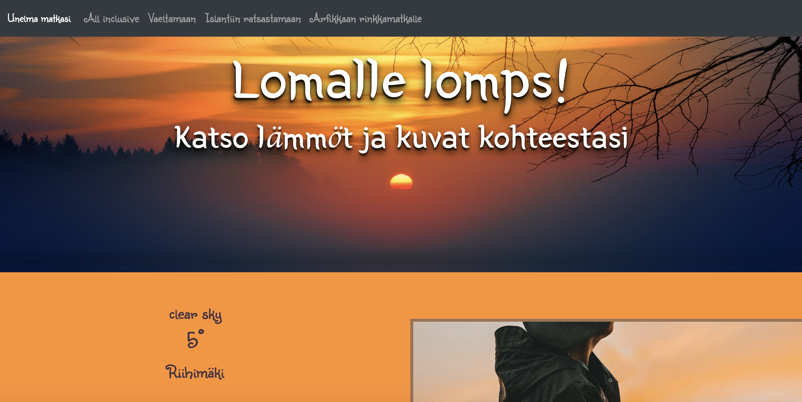
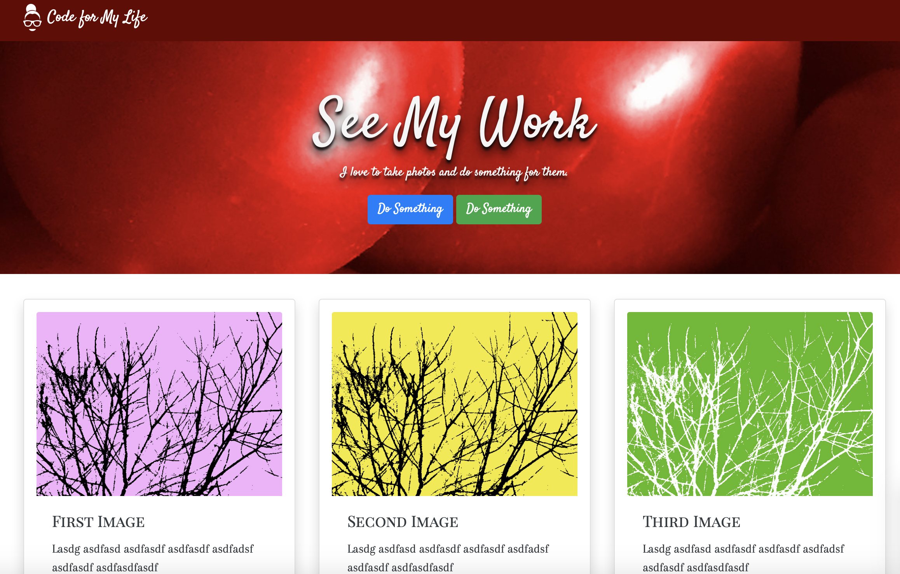
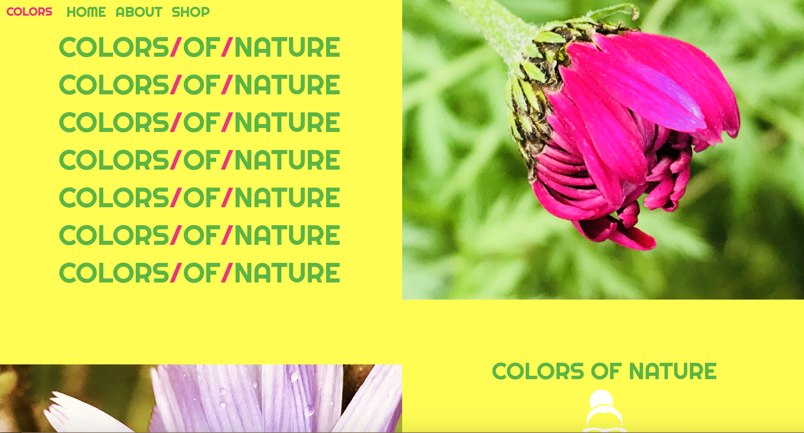
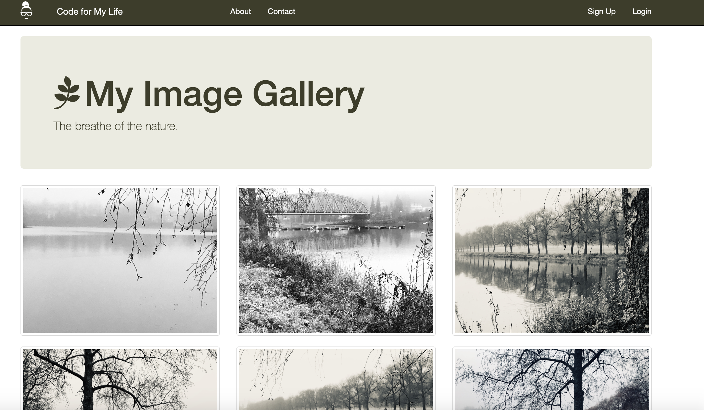

Marika Könönen
Code for My Life
Web Developer
About Me
Me and My Family
- Mom of three kids, wife and a dog owner
- Web Developer - Entrepreneur - Blogger
- CEO of the family company Finnmotion Oy
- Coding is mix of art and math
- I take the pictures for my blog or social media
- I love outdoor life & nature
- Believe in yourself & dreams
My Tribe
- 6 moms in 4 different time zones
- Weekly virtual standup meetings
- Plan and follow daily tasks with KanbanFlow
- Weeky virtual co-working hours
- Discuss tech topics
- Share knowledge
- Stay accountable and productive
My Future
- Find freelance WordPress (=WP) projects
- Finish 2 ongoing courses
- Code my web page from the scratch with WP
- Use WP as a back-end and React as a front-end
- Start podcast with my tribe
- Code 2-3 React applications
- Work at home - be with my kids
Projects
eSports Team Finnmotion - WordPress

Code for My Life - blog

Koodi Elämästäni - blog

Kodari Seikkailee - Blockly Demo

RealUp App - The Win of Hackathon

Onnimanni frontpage - WordPress

Lomalle Lomps - Bootstrap, JS, APIs

See My Work - Bootstrap 4

Naiset Koodaamaan!

Colors of Nature - Bootstrap 4

Lahjatoivekone - Bootstrap

My Image Gallery - Bootstrap

Old portfolio

Tech Experience
I started to code 12 years ago but last two years my coding has been even more goal oriented than ever.
My strenght is definitely wide basic knowledge in different tech areas, but my focus is on web development and especially on full stack development.
WordPress is wonderful environment which makes coding easy with the build-in functions; even if you are developing web servise alone, with help of
WordPress it can be easier because it takes care of the back-end as long as you know, which build-in functions works together with different use cases.
JavaScript library React is fast and takes coding experience totally new level. My purpose is to combine these two techniques by using WordPress as a back-end
and build the font-end with React.
Front-end Techniques over 10 years
- HTML since 2006
- CSS since 2006
- Bootstrap since 2017
- React since 2018
Back-end Techniques over 10 years
- Java since 2007
- Python since 2013
- JavaScript since 2017
- PHP since 2018
- MongoDB since 2018
- Node.js since 2018
Frame Works and Libraries 1 year
- React - JavaScript library
- JQuery - JavaScript library
- Ajax - Asynchronous JavaScript and XML
- JSON - JavaScript Object Notation
- Blockly - A JavaScript library for building visual programming editors
Documenting and Testing
- Cypress.io e2e testing tool
- UML modelling language
- Documentation of software development
- Create and run tests
- Test automation
Teaching 1.5 years
- Basics of the programming structures - Python
- Scratch - Code.org - Codesters
- Micro:Bit - Edison robot - Rasberry Pi
- HTML-CSS-Bootsrap-JavaScript
- 2D & 3D game programming in visual environments
- Teach kids, youth and adults
- Teaching in courses & summer camp & workshops
- Webinars for teachers
- Plan and develop teaching materials
WordPress Theme Developing 1 year
- PHP - HTML - CSS - Bootstrap basic web dev
- JQuery - Ajax make coding easier
- Usage of WP build-in functions makes security better
- Create shortcuts
- Create frontend by using WP loops
- Create page templates
- Create navigation bar
- Create side bar
- Admin page building
WordPress Theme Developing
- Add items to admin page
- Activate/deactivate items from adming page
- Custom post type
- Custom fields
- ACF (Advanced Custom Fields)
- Custom columns
- Custom meta fields
- Built-in contact form
- Add custom post type to widget area
Work Experience
| Job Description |
Company |
Year |
| CEO |
Finnmotion Oy |
21.06.2018 - to present |
| Web Developer, Coding Teacher |
Finnmotion Oy |
01.03.2017 - to present |
| Web Developer |
Geniem Oy |
28.10.2019 - 14.05.2020 |
| R & D Engineer |
Nokia Solutions and Networks Oy |
04.03.2013 - 01.01.2018 |
| Accounting Clerk |
Tmi Finnmotion, Finnmotion Oy |
01.11.2007 - to present |
| Clerical Employee |
KT Kone Ojala Oy |
24.04.2010 - 03.11.2011 |
| UI Programmer |
Oppifi Oy |
01.07.2009 - 31.08.2009 |
| Personal Care Assistant |
Kotihoito Aurinkoiset Oy |
01.04.2008 - 15.08.2009 |
| Accounting Clerk |
Graham Packaging Company Oy |
19.06.2007 - 24.08.2007 |
| Accounting Assistant |
Graham Packaging Company Oy |
03.12.2005 - 29.09.2006 |
| Job Description |
Company |
Year |
| Accounting Clerk |
No Brakes Marketing Oy |
25.09.2003 - 05.08.2005 |
| Personal Care Assistant |
Alli Hästbacka |
19.06.2003 - 15.08.2003 |
| Kitchen Helper, Cleaner |
Helsingin VMP Palvelu Oy |
28.02.2003 - 07.06.2003 |
| Production Employee |
Vantaan Tiimipalvelu Oy |
26.06.2001 - 17.08.2001 |
| Cleaner |
HMR-Palvelut Oy |
19.02.2001 - 01.09.2001 |
| Product Representative |
Publicis Dialog Oy |
16.08.2000 - 05.03.2001 |
| Production Employee |
Fazer Suklaa Oy |
14.08.2000 - 01.12.2000 |
| Horse Stable Employee |
Hattel Horse |
04.11.1999 - 04.02.2000 |
| Cleaner |
ISS Suomi Oy |
16.06.1998 - 16.04.1999 |